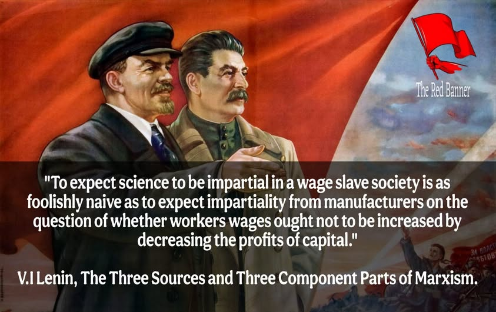

Charla — 15 min
01 / 12 — Archivo No. 001
El valor ya
no se extrae
del hombre
Cibersocialismo y teoría del valor-trabajo
en la era de la IA
Proyecto / Tesis
Rubén Jiménez Navarro — BIAS Scraper
Marco teórico
Si el sesgo es real,
la ciencia tampoco
es inocente
- Un detector de sesgo necesita explicar por qué existe el sesgo.
- La "neutralidad" de los medios y de la ciencia no es un dato: es una hipótesis que hay que probar.
- Marco de hoy: economía política del valor + IA.
02 / 12
Archivo — 02

Traducción
"Esperar que la ciencia sea imparcial en una sociedad de esclavos asalariados es tan ingenuamente necio como esperar imparcialidad de los fabricantes sobre si el salario de los obreros no debería aumentarse a costa de disminuir las ganancias del capital."
V. I. Lenin — Las tres fuentes y las tres partes integrantes del marxismo
Toda medición de sesgo parte de una postura sobre quién produce el discurso — y a quién beneficia.
03 / 12
Teoría del valor-trabajo
El valor viene
del trabajo,
no del precio
VALOR = TRABAJO
SOCIALMENTE NECESARIO
- Una mercancía vale lo que cuesta producirla en trabajo humano promedio.
- El capital no "crea" valor: lo organiza y se apropia de una parte.
04 / 12
Plusvalía
La ganancia es
trabajo no pagado
- El obrero produce más valor del que recibe en salario.
- Esa diferencia — la plusvalía — es la fuente clásica de la ganancia.
30%Salario
70%Ganancia
05 / 12
Cibersocialismo
Planificar sin
mercado
- Chile, 1971–73: Project Cybersyn (Stafford Beer) — control de la producción en tiempo real, sin precios de mercado.
- Cockshott & Cottrell: usar potencia de cómputo para calcular directamente en horas de trabajo.
- La tesis: la computación puede reemplazar al mercado como mecanismo de coordinación.
Op. Cybersyn
06 / 12
El quiebre
La IA rompe
la ecuación
clásica
- Si el valor nace del trabajo humano, ¿qué pasa cuando la máquina hace el trabajo?
- El costo marginal de producir ya no depende de horas humanas explotadas.
- El excedente deja de extraerse "del hombre."
07 / 12
Consecuencia económica
Los bienes se
abaratan cuando
el trabajo ya no
se cobra
- Menos trabajo humano incorporado → menor "valor" clásico → precios de producción a la baja.
- El viejo cálculo capitalista (extraer plusvalía del obrero) pierde su objeto.
08 / 12
El problema real
Pero el relato
sobre la IA
no es neutral
- ¿La automatización se cuenta como "progreso que libera" o como "amenaza que despide"?
- Cada medio narra la misma transición según a quién sirve el relato.
- Medir ese sesgo exige el mismo marco: ¿de dónde viene el valor y quién lo narra?
09 / 12
La herramienta
BIAS Scraper: medir
el sesgo ideológico
en la prensa mexicana
- Pipeline KDD de 6 fases: scraping, limpieza, anotación, clasificación, evaluación, visualización.
- Un clasificador aprende a distinguir encuadres ideológicos en la cobertura noticiosa.
- La IA no es neutral por defecto — se audita con la misma teoría con la que auditamos al mercado.
Proyecto / Tesis
10 / 12
Síntesis — 11 / 12
De la teoría del
valor a una
herramienta de análisis
Cibersocialismo y BIAS Scraper parten de la misma pregunta:
¿quién controla el relato del valor?
Gracias
Preguntas
Rubén Jiménez Navarro — BIAS Scraper
12 / 12